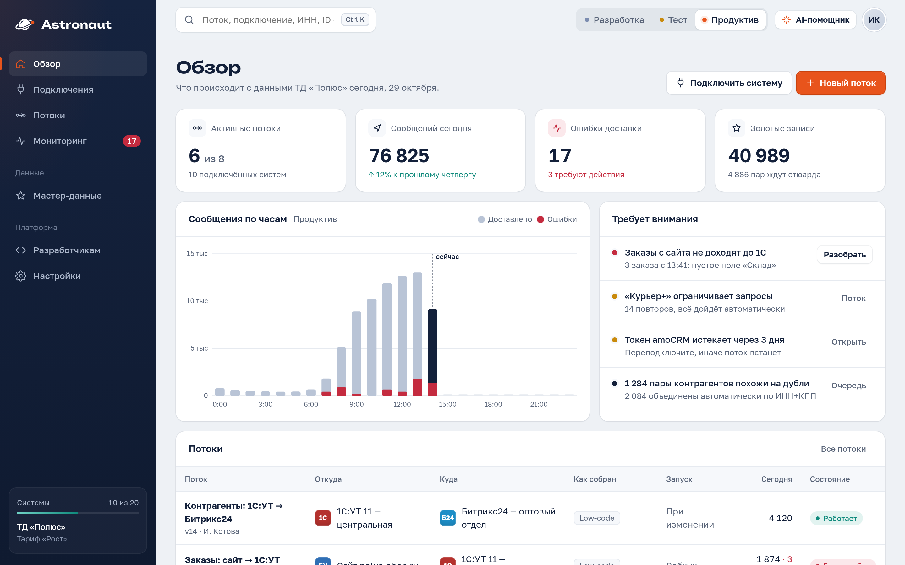
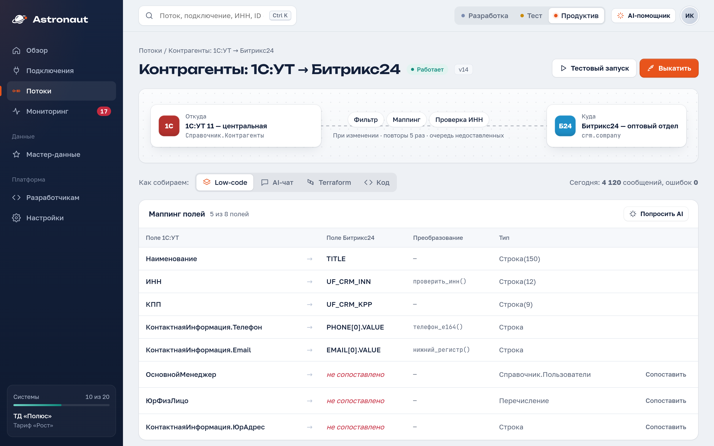
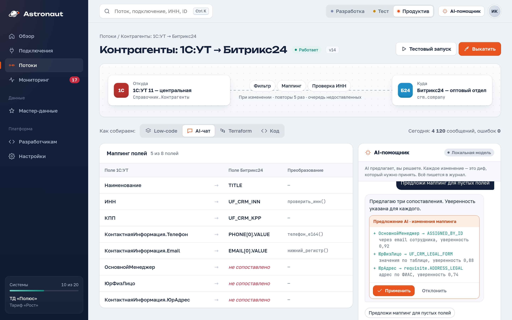
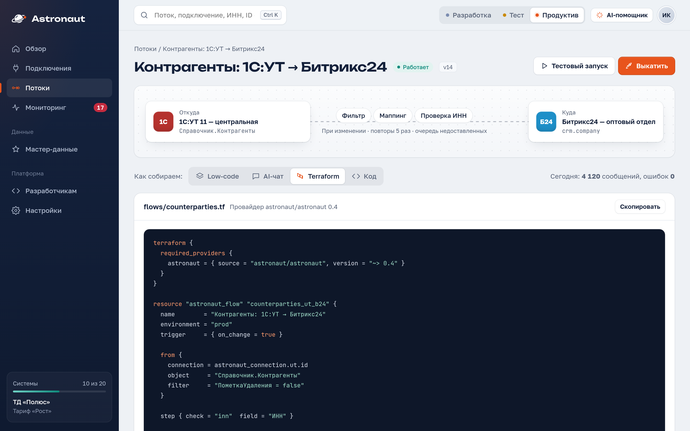
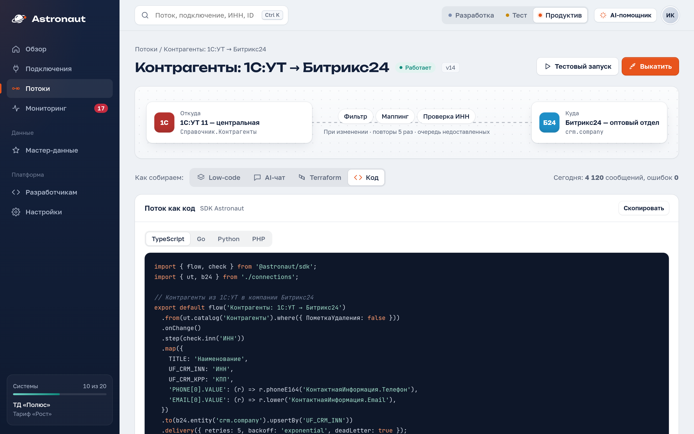
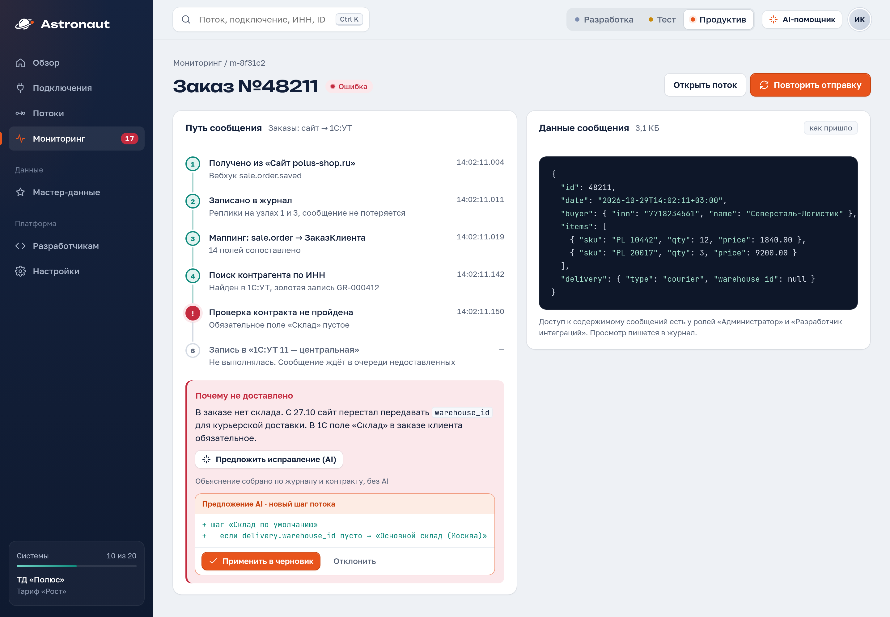
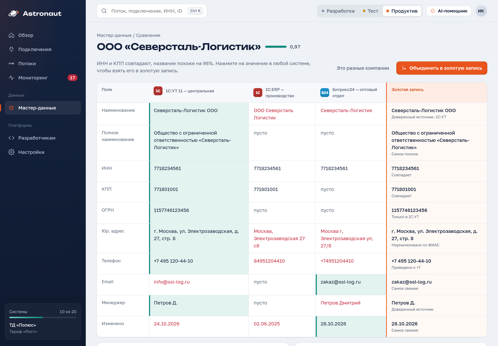

Платформа интеграций и мастер-данных для компаний на 1С, Битрикс, CRM и своих базах. Собирайте потоки мышкой, через AI-чат, в Terraform или кодом.
1С:УТ или ERP, сайт на 1С-Битрикс, Битрикс24 или amoCRM, хранилище для отчётов, служба доставки по API.
У лидера рынка на объект создают тип данных, пишут обработчики чтения и записи на C# и настраивают маршрут.
Без него при отказе диска очереди теряются, а при падении узла сервис стоит несколько минут.
+ мастер-данные: золотая запись контрагента и товара из всех систем
Пример: Справочник.Контрагенты из 1С:УТ → проверка ИНН и маппинг → компании в Битрикс24, при каждом изменении, с повторами и очередью недоставленных.
Сколько сообщений прошло, где ошибки и что с ними делать.

Аналитик настраивает мышкой, разработчик правит код в git, DevOps держит всё в Terraform. Версия потока одна.




Путь каждого сообщения от источника до получателя, причина ошибки и повтор в один клик.

Одна правильная карточка из 1С:УТ, 1С:ERP, Битрикс24 и amoCRM.

Компании, контакты, менеджеры. Выигранная сделка становится заказом в 1С.
Каталог, цены и остатки каждые 10 минут, заказы с сайта сразу в 1С.
Дубли найдены, карточки собраны по правилам, исправления разданы обратно.
Продажи и остатки в хранилище по расписанию, архивы в S3 в Parquet.
Миграция с проверкой и дедупликацией через MDM, без потерянных записей.
Доставка, банки, маркетплейсы: импорт OpenAPI, лимиты, повторы.
Рынок ESB растёт на 19–22% в год, спрос на MDM в 2025 году вырос на 22%. Уход MuleSoft и других зарубежных шин освободил место.
Средний чек у лидера ≈ 170–200 тыс. ₽ в год на клиента. Поэтому идём через интеграторов 1С, а не прямыми продажами.
| DATAREON | 1С:Шина | Open source (NiFi, n8n) | Astronaut | |
|---|---|---|---|---|
| Отказоустойчивость | Модуль за 1,49 млн ₽, простой минуты | Нет данных | Своими силами | Реплицируемый журнал в базовой цене |
| Интеграции как код | C# внутри платформы, перенос экспортом конфигурации | Групповая разработка через GitLab | Частично | SDK на 4 языках, Terraform, CLI |
| Системы кроме 1С | Да | В основном 1С | Да | 9 коннекторов, включая CRM и S3 |
| Мастер-данные | Модули от 2,16 млн ₽ | Отдельный продукт | Нет | Золотая запись и очередь стюарда в MVP |
| Реестр ПО и ФСТЭК | Есть | Есть | Нет | Подаём, пока нет |
До 5 систем, все способы сборки, мониторинг, отказоустойчивость. Тестовая среда бесплатно.
До 20 систем, роли и согласование выката, AI-помощник.
Контрагенты и номенклатура. Здесь основной рост чека: у конкурента от 2,16 млн ₽.
Для сравнения: у DATAREON первый год на 10 систем ≈ 1,18 млн ₽ плюс 15% в год за поддержку. Наши цены — гипотеза, проверяем на первых пилотах.
Канал: у них клиенты и проекты. Партнёрская скидка, обучение, сертификация.
Разборы реальных интеграций и стенд с отказами вместо рекламы.
Установил, собрал поток на своих данных, позвал нас на пилот.
Одна живая интеграция с замером «было — стало», потом договор.
Первые клиенты: средний бизнес на 200–2 000 сотрудников в торговле, дистрибуции и производстве. Госсектор и КИИ — после реестра.
9 коннекторов, 4 способа сборки, мониторинг и повтор, золотая запись контрагентов.
3–5 клиентов через интеграторов. Стенд отказов, публичные результаты.
Заявка в реестр, номенклатура в MDM, ОКПД2 и единицы измерения.
Партнёрская программа, миграция с других шин, новые коннекторы.
Ищем первых клиентов на пилот и интеграторов 1С в партнёры.